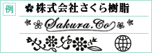

トップページ
＞ 名入れオーダー
名入れオーダーについて
「名入れオーダー」は、アクリ屋の
彫 刻
と
印 刷
のサービスです。
アクリル板への彫刻や印刷にご利用ください。
彫 刻
レーザー加工機でアクリル板に彫刻します。彫刻部分はツヤ消し調。
1点から安価に製作可能
ロゴマーク・図案・文字の彫刻

の
原寸データ
高速回転する刃物でアクリル板に彫刻します。彫刻部分は磨いた仕上がり。
1点から安価に製作可能
彫刻部分に
白
・
赤
・ 黒
で色付け可能
ロゴマーク・図案・文字の彫刻
の
原寸データ
丸ゴシック体
・
明朝体
で、漢字・かな・英数字を彫刻します。ツヤあり。
1点から安価に製作可能／
データ不要
彫刻部分に
白
・
赤
・ 黒
で色付け可能
丸ゴシック体・明朝体
での文字彫刻
【
文言】
と
【文字サイズ】
を指定
印 刷
アクリル板に直接、文字やロゴマークを印刷します。量産向けの印刷。
白
・黒・
赤
・
黄
・
緑
・
青
・
藍
の基本７色の他、指定色の調合も可能。
ロゴマーク・図案・文字の印刷
の
原寸データ
アクリル板に直接、フルカラー印刷します。高解像度の写真やイラストにも対応。
最大1800dpiの高解像度に対応。数量が少ない場合は安価に製作可能。
ロゴマーク・図案・文字の印刷
フルカラーの印刷
の
原寸データ
の
原寸データ
acry-ya.com